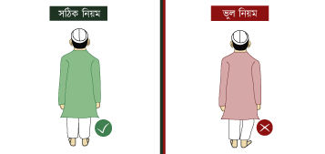
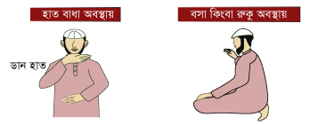

নামাজে কিরাত পাঠ করার নিয়ম
নামাজে নিয়্যত বাঁধার পরে প্রথম রাকাতে প্রথমে মনে মনে সানা পাঠ করবে। অতঃপর সুরা ফাতেহা পাঠ করবে। সূরা ফাতেহার পরে অন্য একটি সুরা মিলাবে। নারী লোক সর্বদা মনে মনে কেরাত পাঠ করবে, আর পুরুষ লোক ফজর, মাগরিব ও এশার ওয়াক্তে ফরজ নামাজের প্রথম দুই রাকাতে উচ্চস্বরে কেরাত পাঠ করবে। তবে একাকী নামাজ পড়লে কেরাত মনে মনে পাঠ করার অনুমতি আছে। যোহর, আসর, মাগরিব এবং এশার ফরজ নামাজের শুধুমাত্র প্রথম দুই রাকাতে সুরা ফাতেহার পরে অন্য একটি সুরা পাঠ করতে হবে। ফরজ নামাজের তৃতীয় ও চতুর্থ রাকাতে শুধু সুরা ফাতেহা মনে মনে পাঠ করবে। তবে ফরজ ব্যতীত অপর সমস্ত নামাজে সকল রাকাতে সুরা ফাতিহা ও অন্য একটি সুরা (অথবা সুরার কিছু অংশ) পাঠ করতে হবে।
আদবের সাথে সোজা হয়ে দাঁড়িয়ে নামাজ পড়তে হবে। দুই পায়ের উপর সমান ভর দিয়ে সোজা হয়ে দাঁড়াবে। বিনা কারণে অঙ্গ-প্রত্যঙ্গ নাড়াচাড়া করবে না। মনের মধ্যে আল্লাহর ভয় ধারণ করবে এবং নামাজে পূর্ণ মনোযোগ প্রদান করবে।

হাই তোলা বা হাঁচি-কাশি থেকে বিরত থাকার চেষ্টা করবে। নিতান্তই অপারগ হলে এসমস্ত জরুরতের সময় বাম হাত পেটের উপর বাঁধা রেখে ডান হাত তুলে ডান হাতের পেট দিয়ে মুখ ঢেকে হাঁচি-কাশি দিবে। এখানে উল্লেখ্য যে, নামাজ ব্যতীত অন্যান্য অবস্থায় হাই তোলা বা হাঁচি কাশি দেওয়ার সময় বাম হাতের পেট দিয়ে মুখ ঢাকবে।

দাঁড়ানো অবস্থায় দৃষ্টি সর্বদা সিজদার দিকে রাখবে। এদিক-ওদিক তাঁকানো থেকে অবশ্যই বিরত থাকবে।